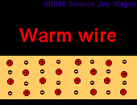
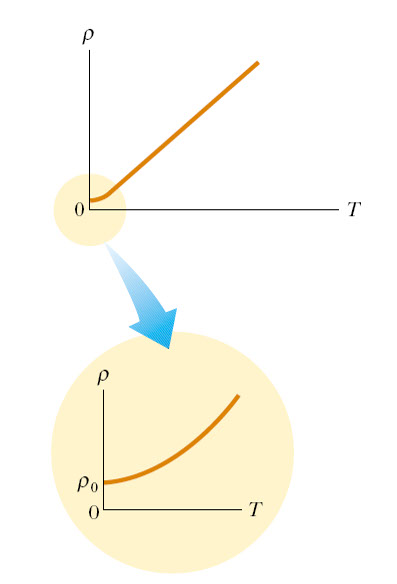
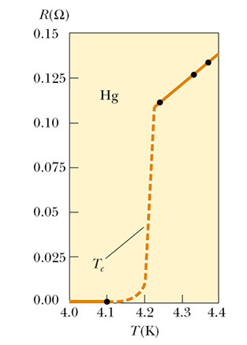

प्रतिरोध पर ताप का प्रभाव
low%20resistance%20coldwire-1-.gif)

- किसी चालक में ताप बढ़ाने से उसमें उपस्थित अणुओं का कम्पन्न बढता है जिसके कारण चालक मे इलेक्ट्रानों के प्रवाह मे अवरोध बढ़ जाता है।
- अतः किसी चालक मे ताप बढ़ाने से चालक का प्रतिरोध या प्रतिरोधकता बढ़ जाता है।
- Mathematically
-u81208.png)
अर्द्वचालक मे ताप का विपरीत प्रभाव:
- किसी अर्द्वचालक मे ताप बढ़ाने से प्रतिरोध में कमी आती है।
- अतः किसी अर्द्वचालक में प्रतिरोध ताप गुणांक का मान ऋणात्मक होता है।
ताप का विस्तार पूर्ण प्रभाव
नीचे दिए गए चित्र में ताप तथा प्रतिरोध / प्रतिरोधकता के मध्य ग्राफ खीचा गया है।

तापमान मे ताप और अवरोध के बीच का ग्राफ एक सरल रेखा है और जैसे-जैसे धातु का तापमान बढ़ता है तार का अवरोध बढता है। मगर जब ताप का मान (absolute) शून्य होता है तो प्रतिरोधकता का मान ρ० हो जाता है।
शून्य तापमान के निकट धातु मे अवशेष प्रतिरोधकता धातु की संरचना मे त्रुटि की वजह से होता है। जबकी उच्च तापमान मे प्रतिरोधकता इलेक्ट्रॉन मे नाभिक से टक्कर के कारण होती है।
अति चालकता
अति चालक पदार्थ में समान्य चालक की तुलना में ताप का उल्टा प्रभाव पडता है।
- अति चालक एसे पदार्थ होते है जिनकी प्रतिरोधकता ताप घटाने पर असमान्य रूप से घटती है तथा एक विशेष ताप पर अचानक शून्य हो जाती है। इस विशेष ताप पर चालकता अनन्त हो जाती है।
- इस विशेष ताप को पदार्थ का क्रान्तिक ताप कहते है।
